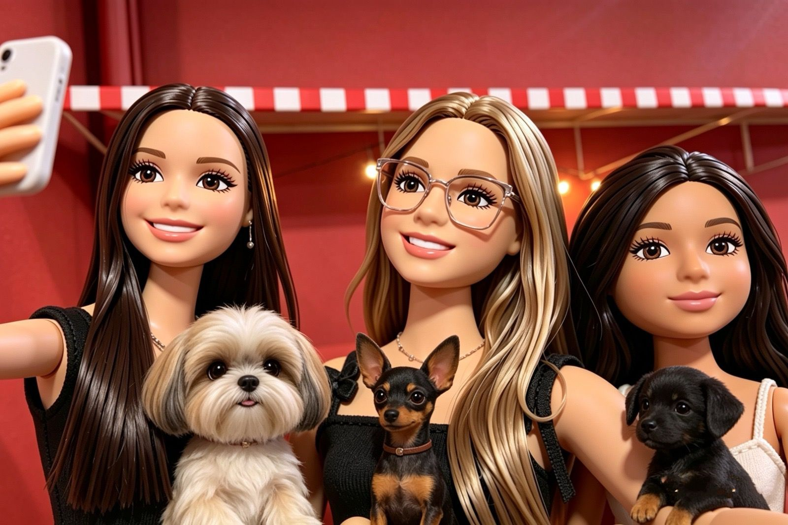

Tudo começou com três amigas que compartilhavam algo em comum: o amor incondicional pelos animais. Desde pequenas, elas sempre se reuniam para cuidar de pets da vizinhança, resgatar bichinhos abandonados e aprender tudo o que podiam sobre o bem-estar animal. Cada uma tinha uma personalidade única — uma era organizada e sonhadora, outra criativa e cheia de ideias, e a terceira era prática e determinada. Juntas, formavam uma combinação perfeita. Com o passar dos anos, perceberam que queriam transformar esse carinho em algo maior. Foi então que nasceu o sonho de criar um pet shop que fosse mais do que uma loja um lugar acolhedor, onde cada animal fosse tratado como parte da família. Depois de muito planejamento, esforço e algumas dificuldades pelo caminho, elas finalmente abriram as portas do seu próprio negócio. O espaço foi pensado com cuidado: produtos de qualidade, serviços feitos com carinho e um atendimento cheio de amor e atenção. Assim nasceu o pet shop das três amigas — um lugar construído com amizade, dedicação e, acima de tudo, paixão pelos animais. Desde então, cada cliente que entra ali não encontra apenas produtos, mas uma equipe que realmente se importa com cada pet que passa pela porta. 🐾💖
